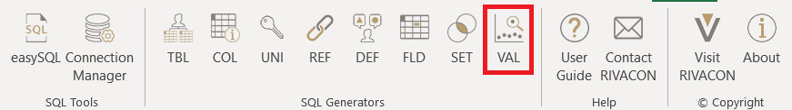
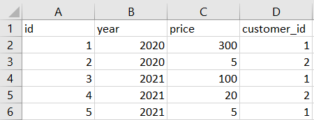
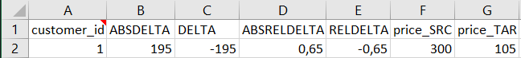
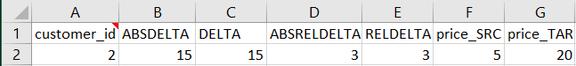
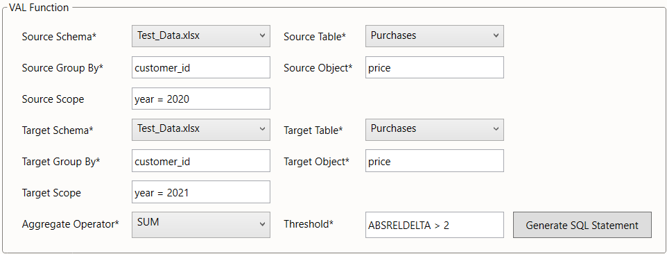

VAL
Identification of significant quantitative changes
The VAL generator is used to detect noticeable changes in data. This can be useful for detecting possible errors or outliers.
The VAL generator may be used directly as a worksheet function. Rather than doing this, we suggest using the VAL dialog from the menu bar, especially when using this function for the first time.

Figure 1: location of the VAL ribbon
Example
Consider the database of a retailer with an entity purchases.
Attributes of each purchase include the price paid and the id of the customer who carried it out.
We are interested in how much the total purchase value of each customer changed from 2020 to 2021.

Table 1: purchases
We can analyze four types of metrics:
DELTA, the difference between the new and the old entryABSDELTA, the absolute value ofDELTARELDELTA, the percentage change between the new and the old entryABSRELDELTA, the absolute value ofRELDELTA
For example, if we would like to find every customer, whose purchase value decreased by more than 100, our threshold would be DELTA < -100.
In the same way, the threshold ABSDELTA > 100 gives us every customer, whose purchase value changed by more than 100.
Table 2 shows every customer, whose total purchase value has dropped by more than 100. In addition, each one of the metrics is shown for this customer.

Table 2: Executed VAL for DELTA < -100
While the query in Table 2 focuses on absolute change, the following one addresses relative change, which can be equally useful.

Table 3: Executed VAL for ABSRELDELTA > 2
Settings
The pattern is instantiated via twelve parameters, five related to the source (the outdated table), five to the target (the updated table), and another two specify the quantitative change we are looking for. It is important, that changes happen from the source to the target table. Therefore, if using VAL for changes in time, the source can be seen as the outdated, and the target as the updated data. The source and target are each defined via two parameters:
- the
source schema/target schema(providing for databases where identically named tables may exist in different schemas) - the
source table/target table
The third parameter is the attribute to group the source and target table by.
- the
source group by/target group by
In the above example, both tables are grouped by the customer_id.
The fourth parameter
- the
source object/target objectdefines the attribute, that we want to apply the check on
The fifth parameter defines the scope, i.e. the subset of the source / target tables to be included in the check:
- the
source scopedefines the subset of the updated table to be included in the check - the
target scopedefines the subset of the outdated table to be included in the check
The scope is specified in the syntax of an SQL where clause.
It is an optional parameter.
When left blank, the scope is the entire table.
In the below screenshot, we illustrate how the parameters would be chosen to implement the example from Table 3 described above.
We assume, that the data is stored in an Excel workbook "Test_Data.xlsx" with purchases stored in the worksheet Purchases.

Figure 1: VAL settings for ABSRELDELTA > 2